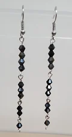
Earrings - Black Drops
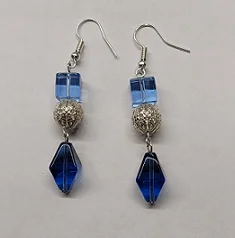
Earrings - Blue Ice
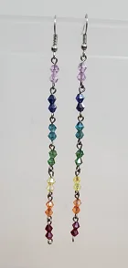
Earrings - Chakra Drops
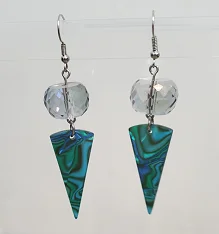
Earrings - Ice Triangles
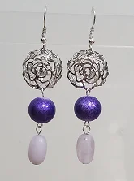
Earrings - Purple Rose (SOLD)
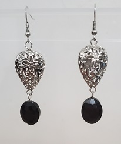
Earrings - Silver & Black (SOLD)
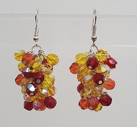
Earrings - Sunbursts (SOLD)
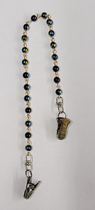
Mask Leash - Blue Iridescent
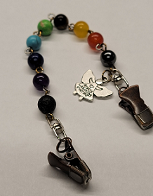
Mask Leash - Gemstones with a Lava Stone Bead and Charm
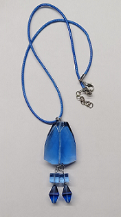
Pendant - Blue Ice
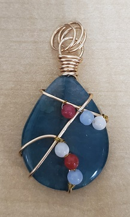
Pendant - Blue Gemstone with Gold Wire and Small Beads (SOLD)
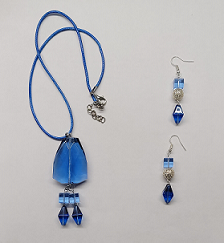
Earrings and Pendant Set - Blue Ice